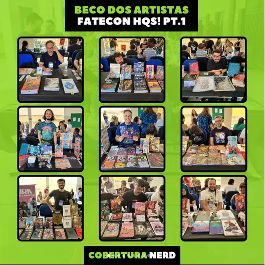
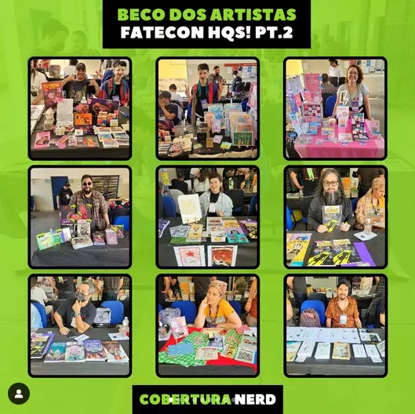
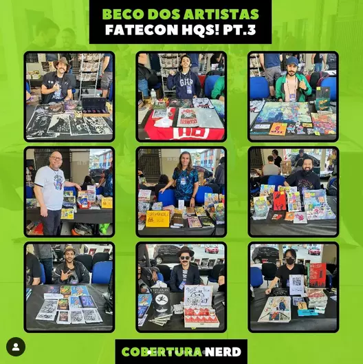
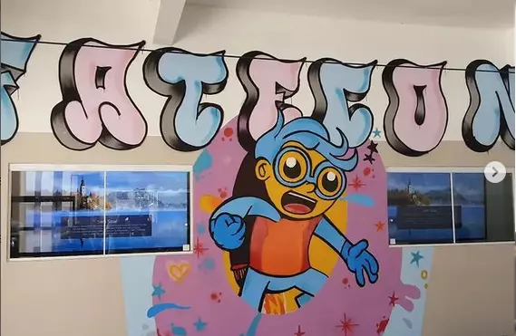

asas
NOTICIAS
Fatecon - São Roque
Fatecon feira de quadrinhos do interior de são Paulo, projeto feito pelo professor Rubens Menezes um historiador e um amante de quadrinhos, teve a ideia de fazer o evento participando inteiramente dês do planejamento e organiza mento das atividades e atrações do evento tendo como atrações de Gibiteca, Jogos de Tabuleiro, Palestras, Oficinas de Ilustrações e HQs, também contara com um “Beco dos Artistas” onde diversos artistas vão expor e vender suas obras para o público.
nao aparece no site
Rubens Menezes

"Beco dos Artistas"



FATEC - SÃO ROQUE
Exposição comemorativa aos 10 anos da Fatec São Roque, contando a sua história desde os tempos do Colégio Bernardino de Campos, até os dias atuais como a Fatec de São Roque.